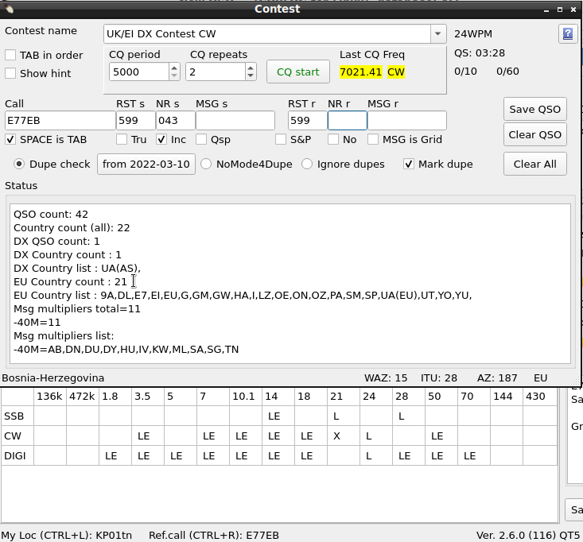

|
WARNING! Backup your data often! BACKUP your log directory at the end of EVERY session! All that you need to backup and store in a safe place is the log database directory located in the ~/.config/cqrlog/database folder, or you can enable the autobackup function in Preferences. This autobackup function creates an ADIF file with a backup of your log. /td> |
| [Menu] |


RECOMMENDATION: Make new log for each contest, do not allow qrz/hamqth search. It slows things. Note: This is NOT a contest logging add-on!!! It is a contest-notepad. It is meant to be a tool for "Sunday contesters working in Tourist Class". Do not expect wonders!
Contest window is just a "child form" for NewQSO to make qso logging faster when working in contests.
With Tru and Msg is Loc setting it is useful also in VHF, UHF, SHF Tropo, Es etc. openings for fast qso
logging.
Contest window has a simple dupe check (same call in same mode and band) that turns typed duplicate callsign bold red printed.
To get this working properly you must either create a new log for every contest or set "preferences/fldigi/wsjt interface/
WB4 check starts from/call Date" and check the "call" checkbox. See : Quick start: wsjt-x interface Remember to uncheck "call" checkbox after contest is over.
HOTKEYS work like in New QSO window.
Form Contest has following fields and checkboxes:
TAB-key moves cursor between fields. So contest qso goes like this: type callsign->press TAB->type contest rxnumber->press TAB->type contest message->press ENTER. Or hit ENTER after rxnumber if no additional message is exchanged.
Remember that pressing ENTER key at any field saves qso with existing values. How ever there must be callsign of least three characters long. Sent/Received number and message are not needed.
Contest numbers and messages are saved in log into their own columns. Use preferences/Visible columns to show them in Qso list.
For editing a qso these columns appear to NewQSO window when contest window is open and NewQso window is streched horizontally (DXCCinfo may override them).
CW macros Have some new items. Look them from CW Operation
ADIF exports fields to right tags.
<RST_SENT:3>599<STX:3>001
<RST_RCVD:3>599<SRX:3>002
<RST_SENT:3>599<STX:3>003<STX_STRING:2>SA
<RST_RCVD:3>599<SRX:3>003<SRX_STRING:2>dd
<RST_SENT:3>599<STX:3>002<STX_STRING:2>SA
<RST_RCVD:3>599<SRX:3>003<SRX_STRING:2>kb
<RST_SENT:3>599<STX:3>001<STX_STRING:2>SA
<RST_RCVD:3>599<SRX:3>002<SRX_STRING:2>SB
HTML export will look like this:

Most contests expect Cabrillo log format. There is no support for this. You have to make ADIF export of qsos and then use separate program if you want to send logs.
I found nice adif2cabrillo program for Linux from http://users.telenet.be/on4qz/ that supports ADIF importing.
Starting is bit complicated: You need to compile it from source. Qt5 with qmake (called qmake-qt5 if your distro is Fedora) is needed to be able to compile it. Then there are no templates for different contests. You have to create them, but after that it serves you well! It accepts nicely exported ADIF format from cqrlog and dig out STX and SRX as expected.
| [Menu] |